Semester 3 · Jury
Rushabh
Mahore
Interaction Design · NID Bengaluru

Why do we fear what we don't understand?The Fear Between UsAmit Kapoor, Prof. Chakradhar Saswade
2 weeks

How do children meet history?Time WanderersDr. Mamata Rao, Prof. Athul Dinesh
4 weeks

How do you prepare for the unknown?SaathProf. Jagriti Galphade, Prof. Athul Dinesh
8 weeks
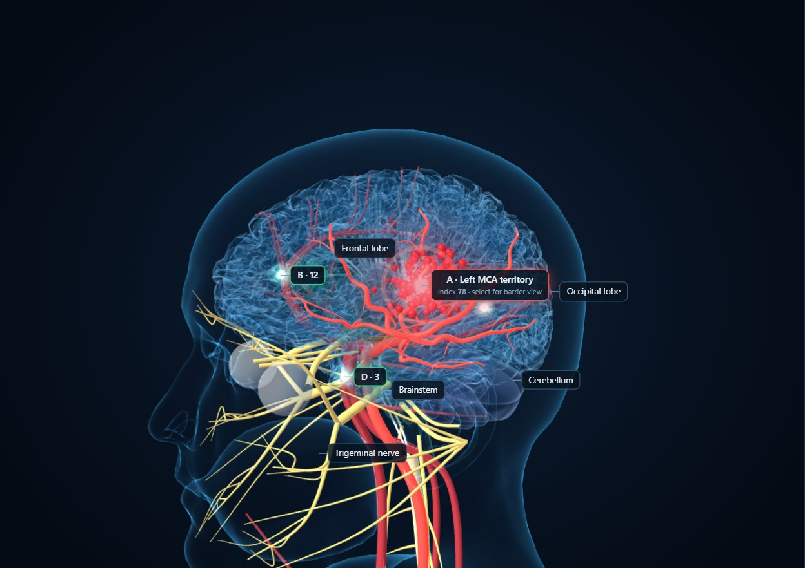
How do you see a barrier inside the brain?
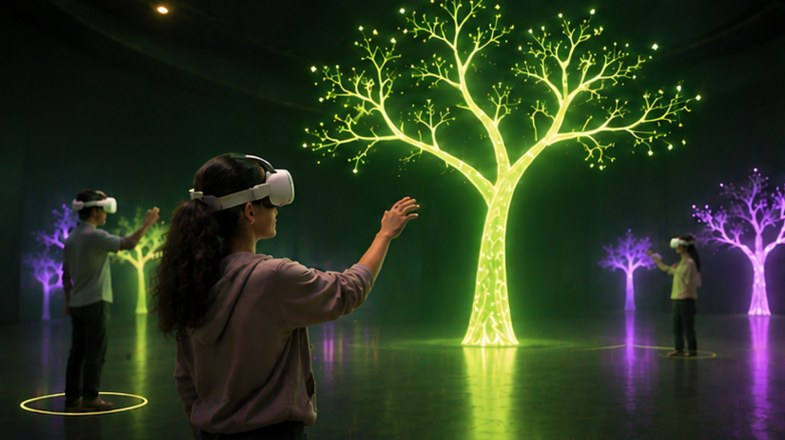
How do you feel the maths in nature?
Data storytelling · Interactive scroll story
The Fear Between Us
Understanding beyond fear.
A story told through data, and the lives it leaves uncounted.
The prototype · live
Scroll it with the jury.
The tool
Who shares your neighbourhood?
Search any area, city or place, or tap Use my location.
Choose on map to drop a pin anywhere in India.
See the species recorded within 5 km, from 33,408 sightings.
Filter species to find where one snake has been seen.
Share a sighting to register a snake you saw.
Register a sighting
Anyone can add to the map.
Name the snake, or type “not sure”.
Add a photo, place and date.
Set the location. Saved only to about 1 km.
It is reviewed before it appears.
rushabhm-blip.github.io/
Snakebite_dataviz_India
Learning outcomes
Less fear. More understanding. Room for both.
Data into story. Cleaning open data and venom studies into a narrative with a turn, not a dashboard.
Numbers need a human scale. “Every hour” lands harder than a yearly total.
Interaction makes facts personal. Drawing a card or searching your own street beats reading a table.
Building it end to end. Coded and shipped as a live web prototype.

Multimodal Interactions · with Sharvani & Ankit · guided by Prof. Mamata Rao & Prof. Athul Dinesh

Problem
Children meet history as isolated facts.
The gap is not information.
The gap is context.
What children told us
How might we
make learning about civilisations and artifacts more immersive, engaging and contextual for children?
Research says curiosity, conversation and exploration drive museum learning. So: don't replace the teacher or the museum, add an experiential layer.
Time Wanderers
Discover the object. Travel through its history.


Clench to choose · hands apart to zoom · walk to explore · blow to uncover · roll back in time · ask with a mic gesture.
Prototype demo
Watch on YouTube ↗youtube.com/watch?v=Yj909EQGlDs · touchless gestures, clench selection, spatial zoom, artifact interaction, real-time narrative.


Learning outcomes
From mockups to code. We built the flow in VS Code by layering assets, video, audio and interaction.
Natural beats clever. Testing taught us to strip complex inputs back to everyday movements with clear signifiers.
Roles and decisions. Splitting asset creation, flow design and assembly kept a tight timeline; decisions stayed collective.
“Every artifact holds a narrative. Connecting people to those hidden stories turns a museum visit into something special.”
Design Project 2 · Mixed reality · Accessibility
Saath
Practise the airport, before the airport.
A mixed-reality rehearsal for older and first-time flyers.
Meta Quest 3 · solo project
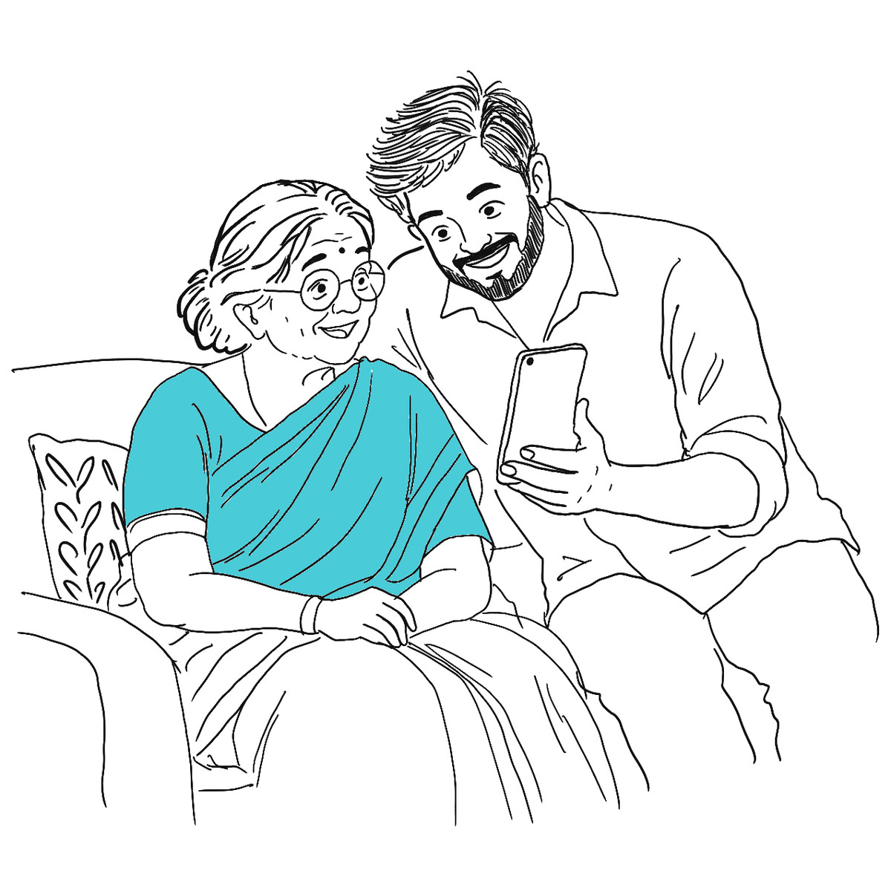
Meet Kamala, 68.
A retired school teacher from Bengaluru. Her daughter lives in Mumbai.
She has flown twice, both times with family.
This time, she wants to go alone.
With every step, she is a little less sure.
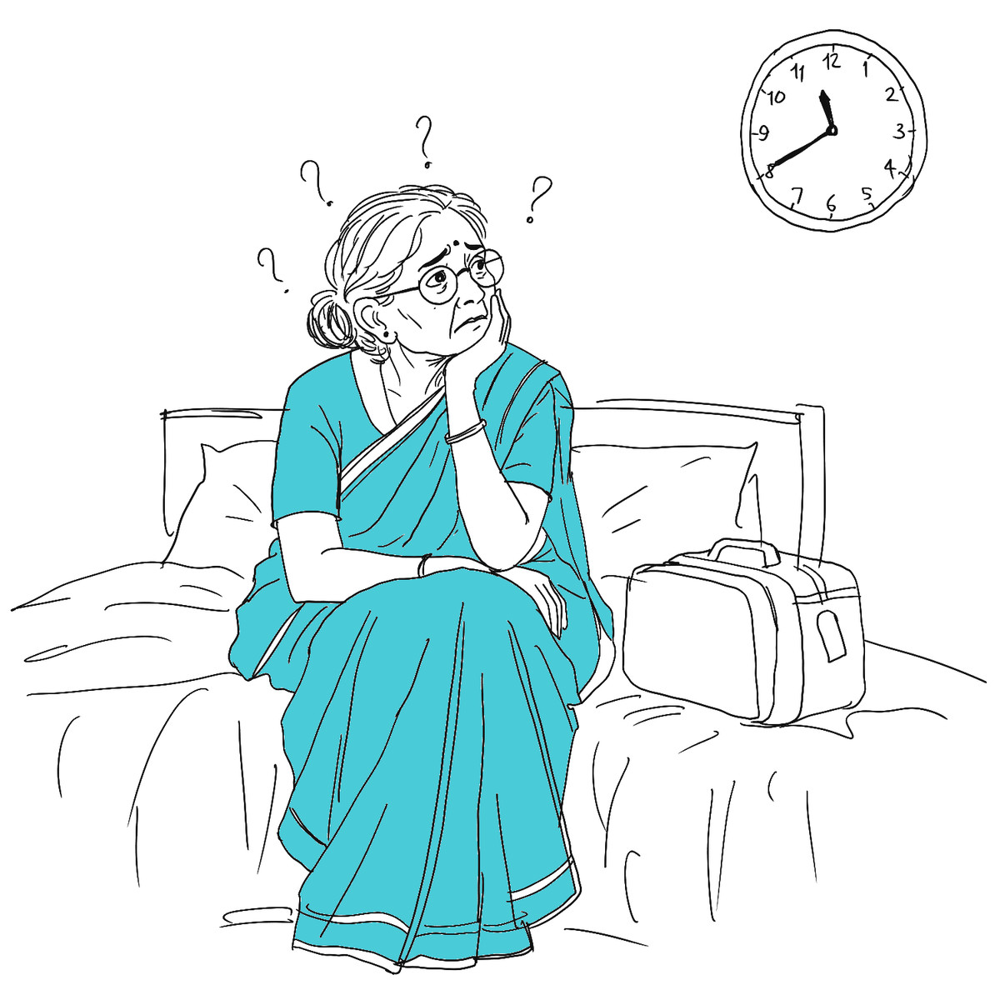
The night before, she cannot picture what happens inside.
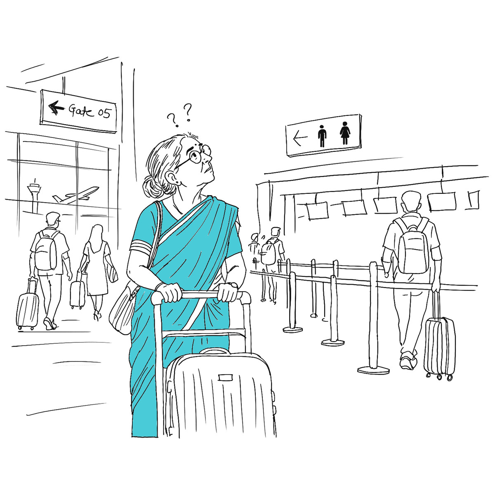
Signs, queues and codes she has never seen.
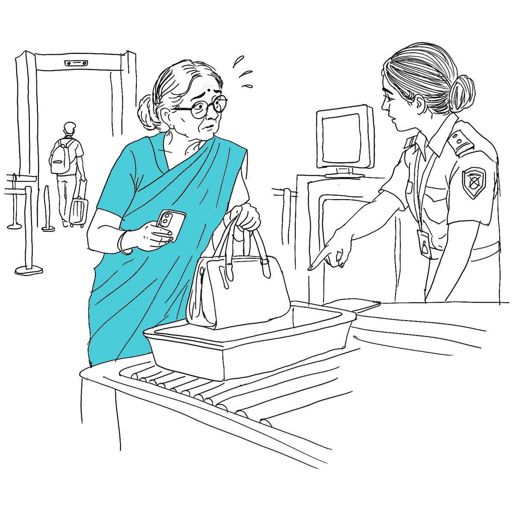
Trays and instructions come too fast.
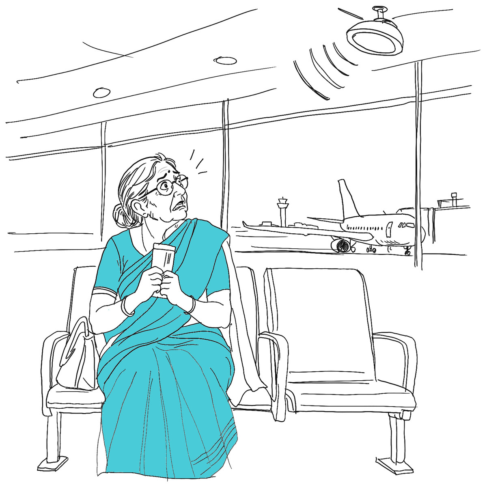
A missed announcement turns into panic.
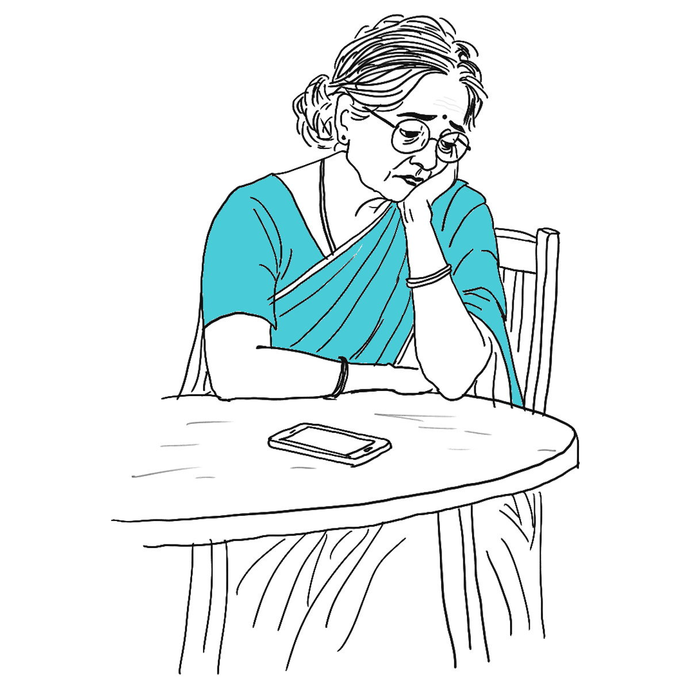
Her confidence drops. She waits for a companion.
1 of 5
The night before, she cannot picture what happens inside.
2 of 5
Signs, queues and codes she has never seen.
3 of 5
Trays and instructions come too fast.
4 of 5
A missed announcement turns into panic.
5 of 5
Her confidence drops. She waits for a companion.
Why it keeps happening
One bad trip feeds the next.
So family flies with her, and the skill never builds.
Or she stops flying, and the airport grows stranger.
User interviews
I spoke to people.
They dread the unknown
Not knowing where to go, or what happens inside.
Asking feels embarrassing
They wait, or feel silly asking twice.
Security is confusing
They don’t know what goes in the tray.
Changes cause panic
A new gate, a missed announcement.
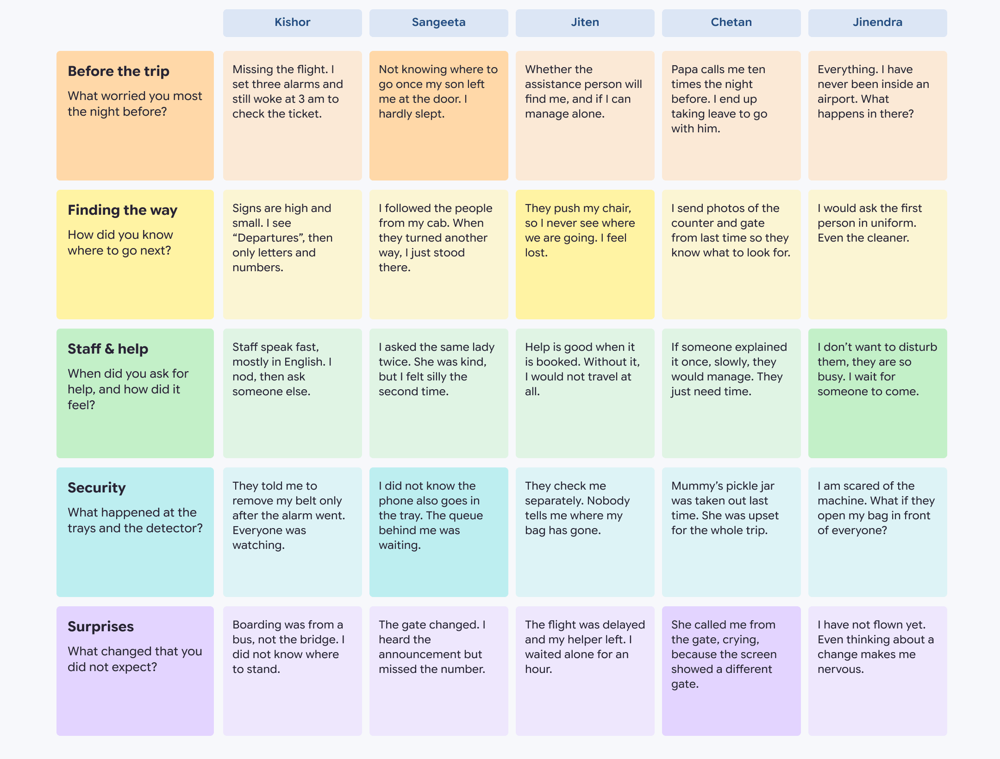
Beneath the surface
Staff see a missed gate. What sits under it?
What happens
What repeats
What sustains it
What she believes
Airports are designed for people who already know them.
The real problem
The gap is not information.
The gap is practice.
Understanding
The order of steps is invisible until you are already in it.
I followed the people from my cab. When they turned another way, I just stood there.
Confidence
Without practice, every step feels like a test.
I did not know the phone also goes in the tray. The queue behind me was waiting.
Independence
Help exists, but asking feels hard.
I don’t want to disturb them, they are so busy. I wait for someone to come.
How might we
let travellers rehearse the whole journey at home, at their own pace, and reach the airport already knowing it?
Watch a video
Easy to share. But passive: nothing to practise.
Printed checklist
Works anywhere. But it does not show the place.
Rehearse at home
Learn by doing, with your own hands, in your own room.
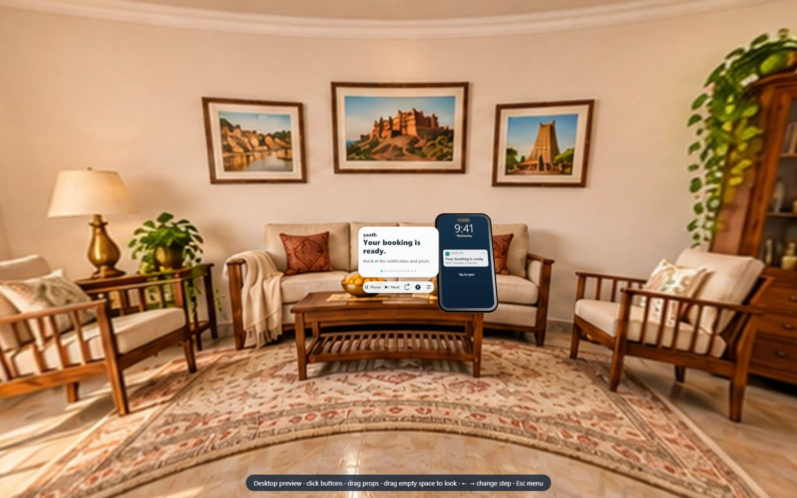
Saath walks beside her.
Saath: “together”, in Hindi
One step, one card, one action.
No timers. She sets the pace.
A calm voice she can repeat any time.
Show me and Ask for help, always there.
Gentle retry, never a failure screen.
The rehearsal
Eleven scenes, in the same order as a real airport.
Now Kamala takes the journey again, with Saath.
She begins
One screen. She types her name.
It appears on her booking, her pass and her ID, and Saath greets her aloud.
She starts in mixed reality, in her own living room.
No headset? Webcam and desktop previews run the same journey.

1 · The ticket
Now she reads it herself.

On a familiar phone. She finds the flight number, then the airport.
One card beside it says what to do next.
2 · The night before
She packs it, once, for practice.
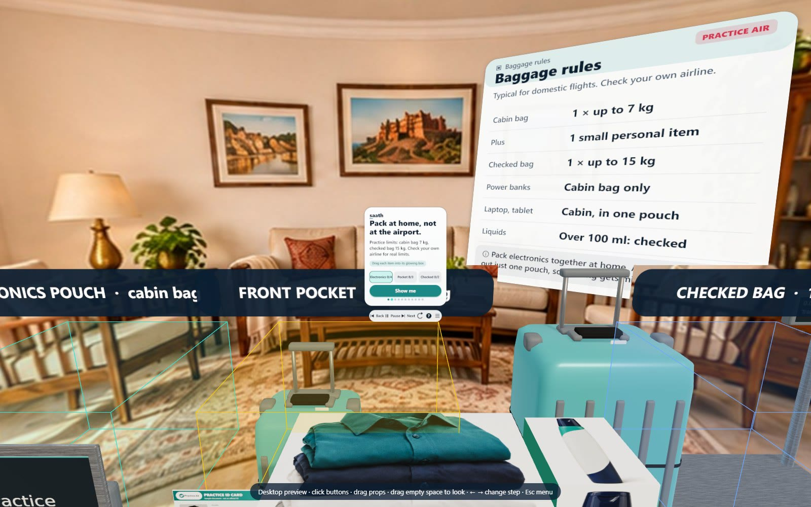
The limits stay in view: cabin 7 kg, checked 15 kg.
She drags each item into its glowing box.
3 · At the terminal
She has already stood at this door.
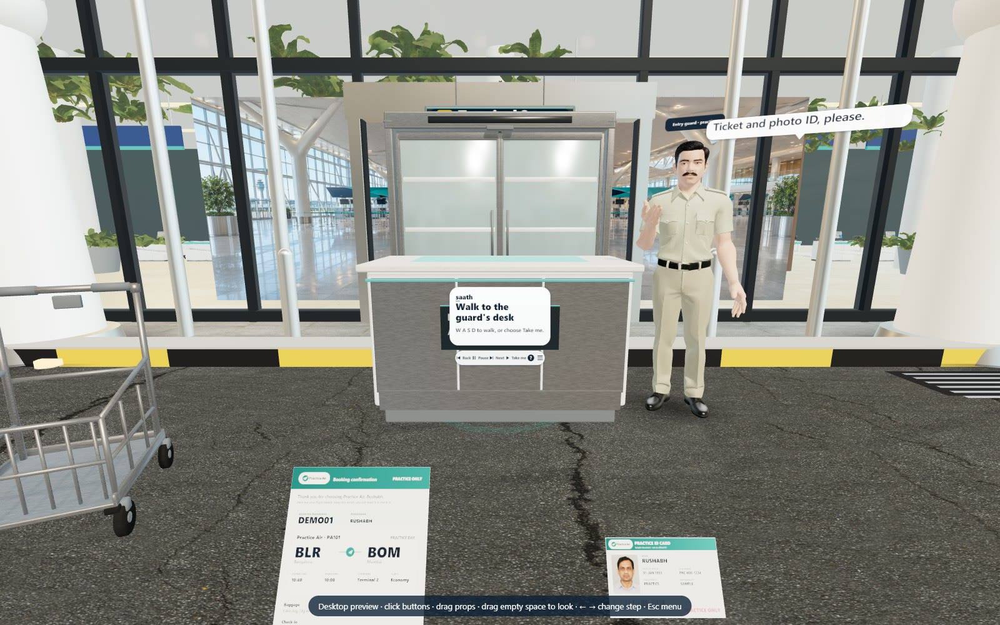
A cab, the kerb, the entrance: she gets out when she is ready.
The guard asks for ticket and ID, as a real one would.
4 · Security
One instruction at a time.

Phone and pouch in the tray, bag on the belt, walk through.
The officer waits. Mistakes stay private, at home.
5 · The gate changes
She notices the change herself.
Her pass says 12. The screen now says 18.
The signs lead on, and she follows them to gate 18.
6 · Seat 14A
“I have been here before.”

Down the jet bridge, to row 14, the window seat.
The loop, broken: the airport is no longer new.
The journey · film
From booking at home to seat 14A.
Built with
three.js + WebXR — runs in the Meta Quest 3 browser
Blender — the airport spaces and props
Figma — research boards, IA and screen flows
Recorded voice guidance — calm narration, repeat any time
Desktop & webcam preview — try it without a headset
Learning outcomes
Design for confidence, not only for ease.
Systems thinking finds the real problem. Loops and the iceberg showed it was confidence, not information.
Designing for older, first-time users. Pace matters most: no timers, one step at a time, mistakes kept private.
Prototyping XR in the browser. three.js, WebXR and Blender, tested on a headset and on a laptop.

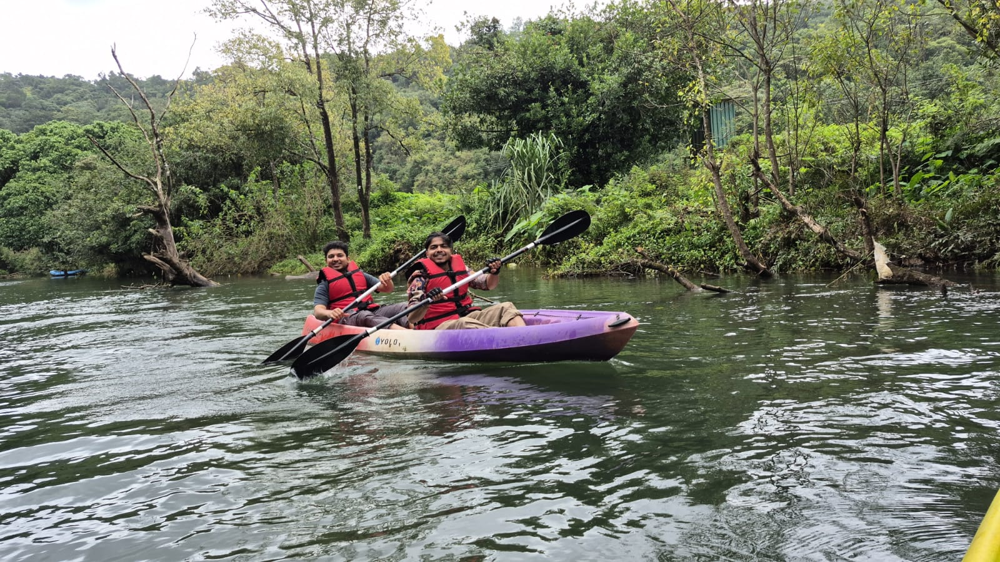
Out in nature
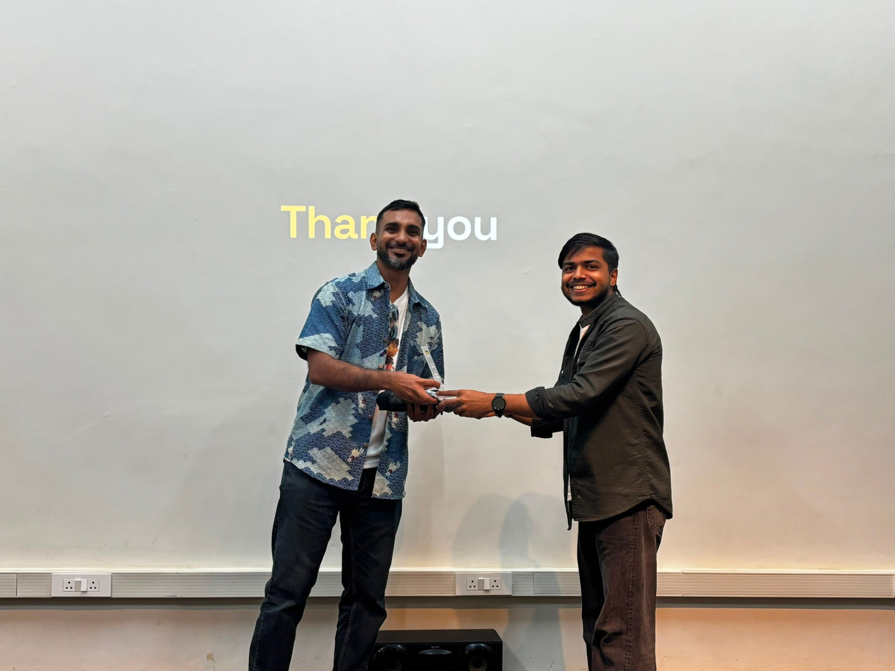
Talk sessions with Gyaan Adda
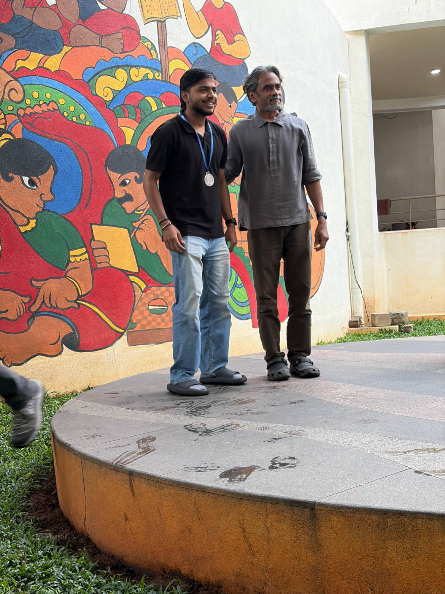
On the podium
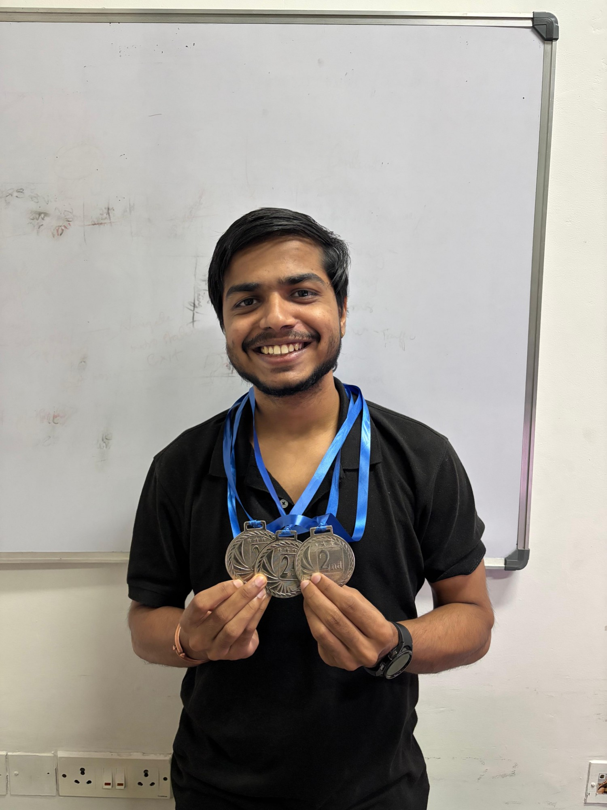
Silver medals in chess and table tennis
Thank you.
Rushabh MahoreInteraction Design · NID Bengaluru
Data visualisation · interactive 3D prototype
Neurovascular Journey
Seeing the blood–brain barrier, from the whole head down to one cell wall.
Concept demo · simulated data · not for clinical use
The problem
The wall that protects the brain cannot be seen.
Capillaries in the brain are sealed by tight junctions, so only selected substances cross. A stroke or a bleed breaks that seal. Some treatments open it on purpose.
How might we show where it is failing, how badly, and what changes over time?
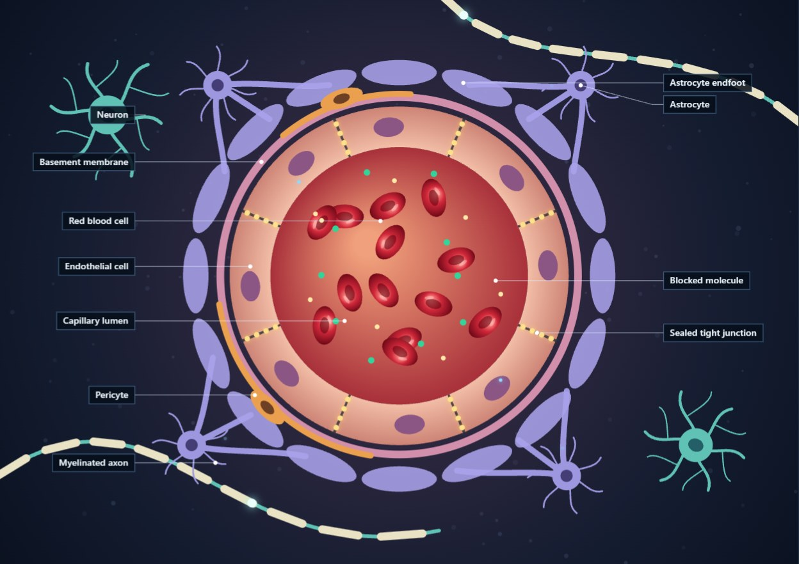
One signal, three scales
Start with the whole head, then go closer.
1 · Where
Head and brain
Which territory is affected, against named anatomy.
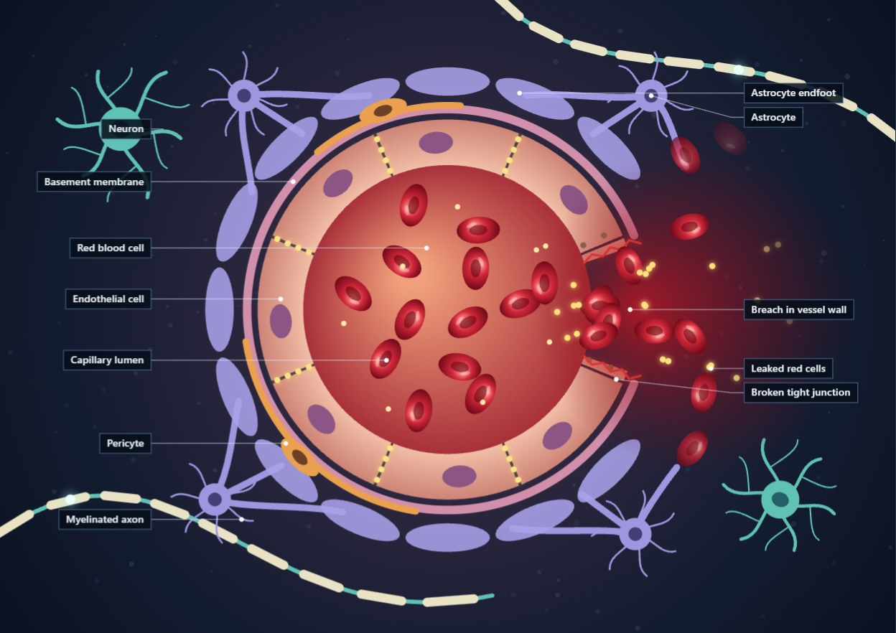
2 · What
Capillary cross-section
What the wall is doing, as one animated cut.
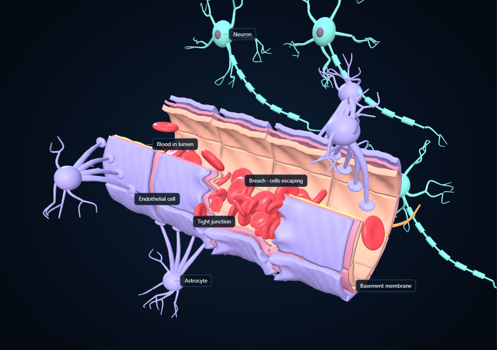
3 · Which layer
Barrier in 3D
Each layer, turned, separated and named.
Four demonstration cases
The same view, four states of the wall.
Haemorrhage
Torn wall. Red cells escape.
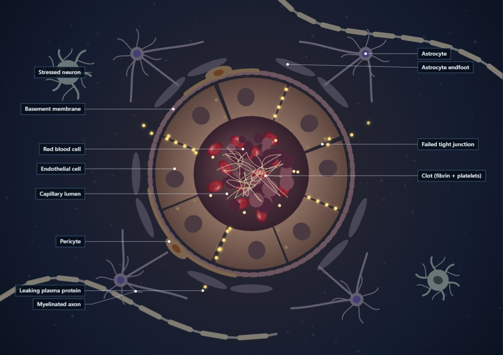
Ischaemic stroke
Flow blocked. Junctions weaken.
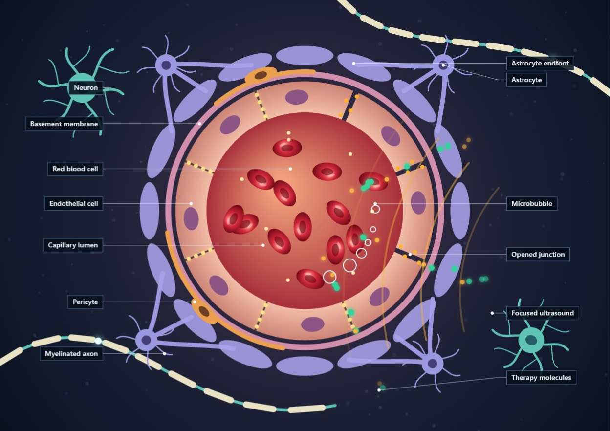
Drug delivery
Opened on purpose, for a while.
Intact reference
Sealed. The comparison state.
Reading change
One number to scan: 0 is sealed, 100 is open.
Haemorrhage
Ischaemic stroke
Drug delivery
Intact reference
All values are invented to demonstrate the interface.
Behind the number
Then six measures, always beside a reference.
| Measure | Reference | Haemorrhage | Ischaemic stroke | Planned opening |
|---|---|---|---|---|
| Barrier index 0–100 | 3 | 78 | 61 | 52 |
| Junction gap nm | 1.8 | 58.0 | 24.0 | 14.2 |
| Electrical resistance Ω·cm² | 520 | 45 | 120 | 180 |
| PS transfer mL/100g/min | 1.0 | 38.5 | 14.2 | 12.4 |
| Red-cell leak cells/min | 0 | 165 | 0 | 0 |
| Tracer or drug passage % | 2 | 92 | 34 | 78 |
| Neuron viability % | 99 | 58 | 42 | 96 |
Invented demonstration values. A scalp sensor cannot directly measure junction gap, electrical resistance, cell leak or neuron viability.
The clinician journey
Eight steps, each opening the view it needs.
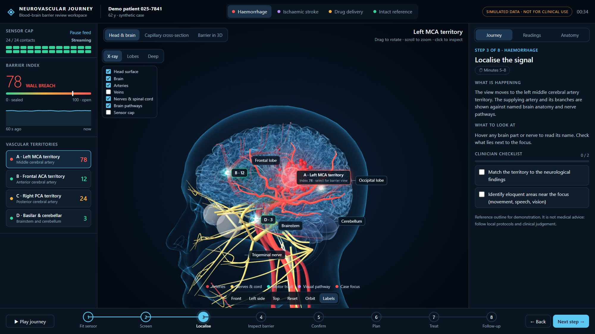
The prototype · live
Open in browser ↗Pick a case, step through the journey, and rotate the head or the barrier.
Learning outcomes
Show the signal, and show its limits.
Overview first, detail on demand. One index to scan, then territory, cross-section and layers.
Colour carries the state. Each case keeps one colour across the buttons, beacons and readings.
Honesty is part of the design. Simulated data, model views and sensor limits are labelled on screen.
Built in the browser. Three.js and canvas, in HTML, CSS and JavaScript.
Head scan: “Lee Perry-Smith”, Infinite-Realities. Brain: 196-part anatomical atlas. Vessels and nerves are schematic.
Immersive VR exhibit
Branching Beyond
An interactive VR exploration of mathematics in nature.
Team: Sneha Karunanithi · Nila Damodar · Ankit Prajapat · Dakshata Shankhwar · Rushabh Mahore
Design Project: AR/VR & Immersive Environments · with Visvesvaraya Industrial & Technological Museum, Bengaluru
Nature is full of maths. Most people never notice it.
Trees are mathematical structures.
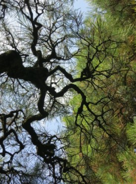
Fractals & recursion
Branches divide into smaller branches, repeating similar structures at different scales.
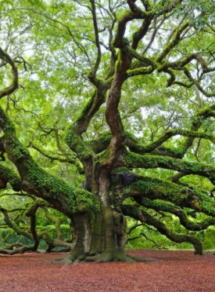
Exponential growth
As branches split, the number of tips rises quickly with each level.
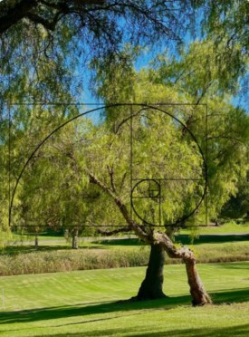
Fibonacci & spirals
Fibonacci-related patterns appear in how leaves are arranged, helping them catch sunlight.
The opportunity
What if we could interact with these patterns?
Maths is often introduced through numbers, formulas and diagrams. What happens when visitors can change the rules and see the outcome?
Turn abstract mathematical ideas into an interactive, visual and spatial experience.
Make mathematical growth visible.
Let visitors experiment with different rules.
Encourage prediction through interaction.
Connect the maths to patterns found in nature.
Three ways to grow
Pick a rule. Watch the numbers.
Fractal
Each branch splits in two.
1 → 2 → 4 → 8 → 16
You change the angle (wide or tall crown) and how much each branch shrinks. Seen in trees, ferns, lungs.
Exponential
Each branch makes 4 shoots.
4 → 16 → 64 → 256
You choose shoots per branch. Slow at first, then it fills the space. Like cells and populations.
Fibonacci
New shoots rest one step first.
1 → 1 → 2 → 3 → 5 → 8
Each number is the sum of the two before it. Seen in sunflowers and pinecones.
The experience loop
Guess, grow, test, rebuild.
Right guess
A new layer grows. Guess the next one.
Wrong guess
Branches break and the tree says why. Try again.
Pushed too far
The tree topples. Change the rule and grow again.
After two wrong guesses a friendly hint appears: mistakes are part of learning. In free exploration, visitors change angles and lengths with no questions asked. Rising tones mark growth, a crackle marks a break, a creak marks collapse.
The visitor journey · concept visuals
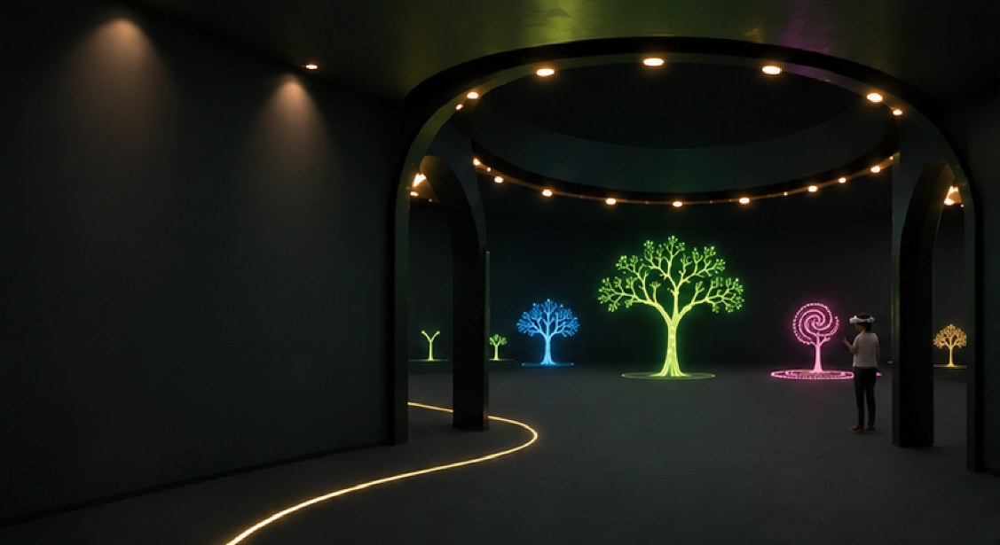
1 · Enter
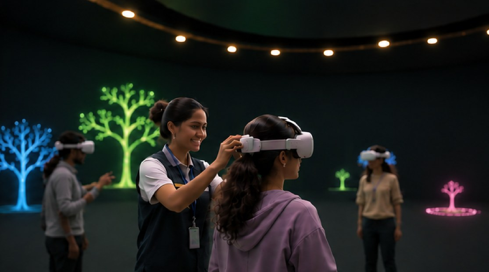
2 · Get ready
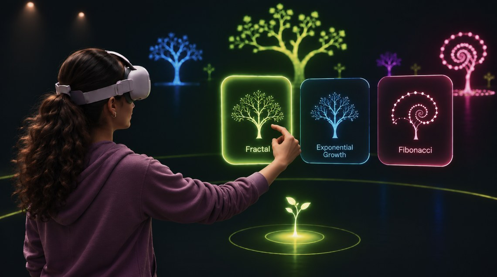
3 · Choose
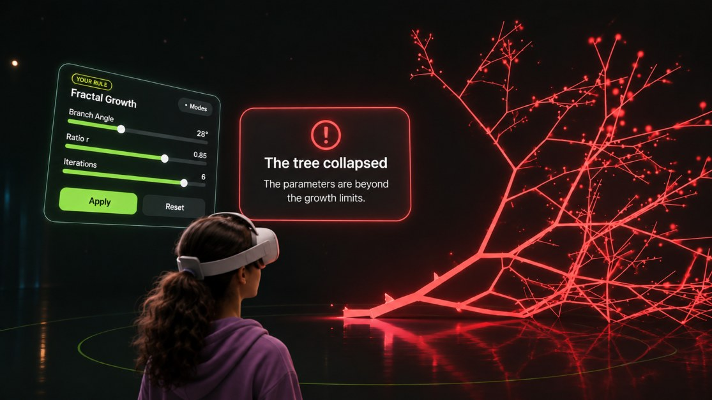
4 · Collapse and rebuild
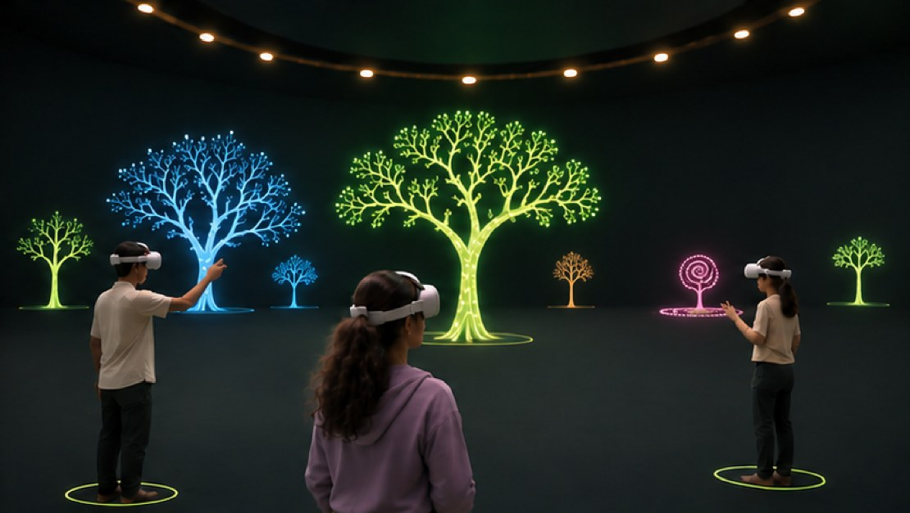
5 · Shared garden
Enter
Visitors walk into the exhibit.
Get ready
A facilitator helps with the headset, controls and hand gestures.
Choose
Pick a mathematical system, predict, and change its parameters.
Collapse and rebuild
A wrong guess, or too much growth, brings the tree down. Rebuild it.
Shared garden
Explore trees grown by other visitors.
The VR experience
Maths you can stand under.
★ Spatial scale
The tree starts at the visitor’s feet and grows overhead, so its size and complexity can be felt.
★ Hand interaction
Hand tracking and pinch gestures select options and change parameters. Controllers also work.
★ Real-time feedback
Changing structures, growth animation and sound respond to every action.
★ Shared experience
A shared display lets people outside the headset watch and join the prediction challenges.